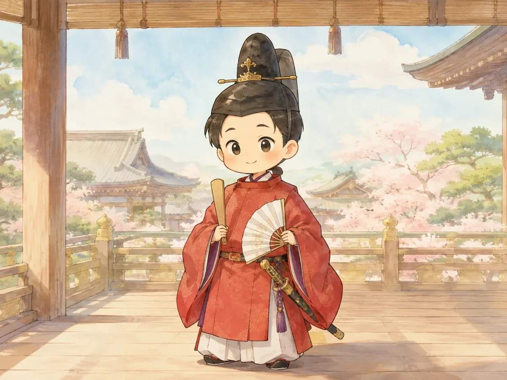
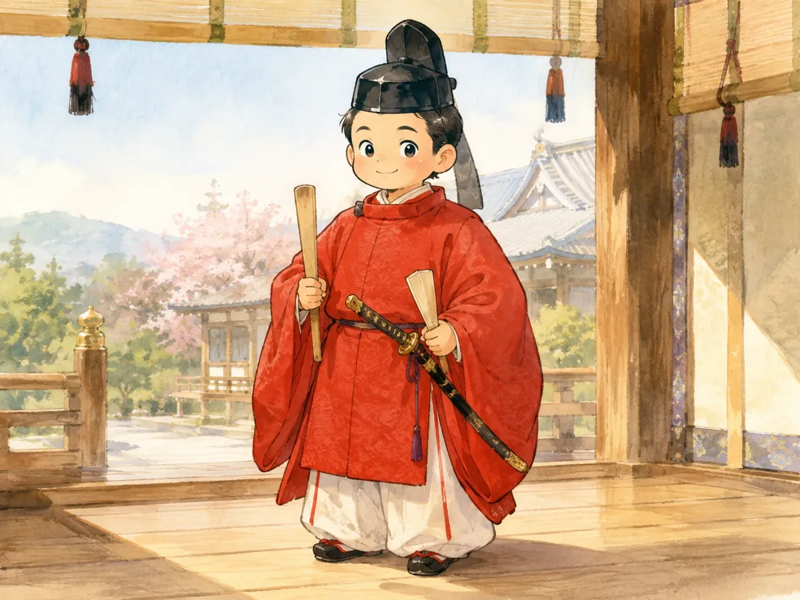
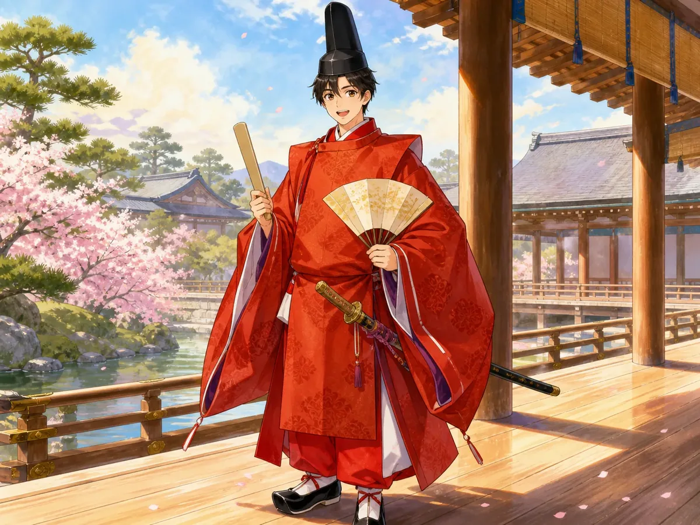
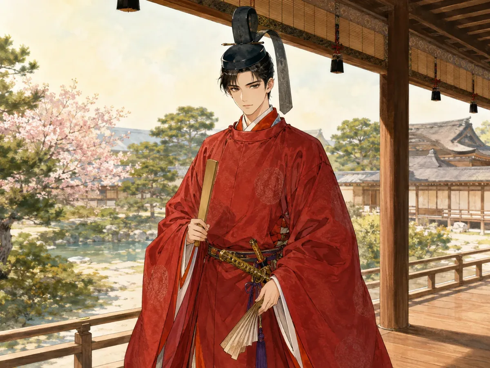
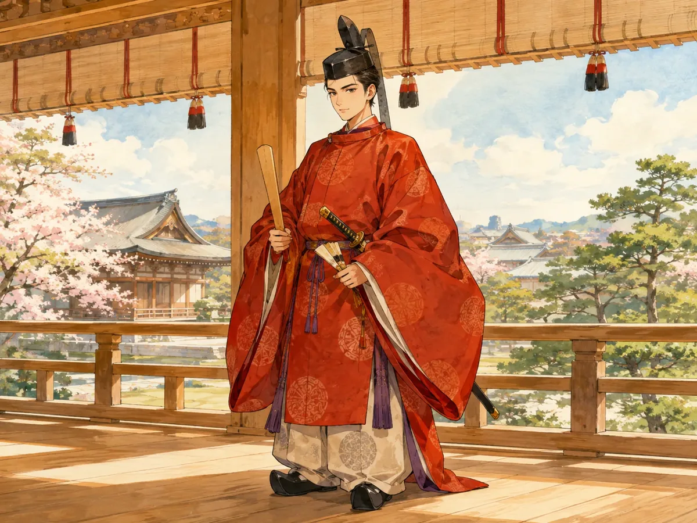
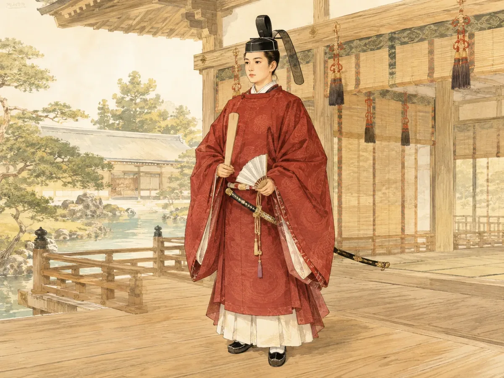

横軸：ゆるい・親しみやすい ← → キリッと端正
縦軸：キャラクター性・ポップ ← → 史実・装束重視

1. ゆるキャラ
左下：親しみやすさ最大
ちいかわ系に近い、丸くてやさしい学習キャラ。低学年にも強い。

2. ゆるキャラ×史実
左寄り・史実寄り
ゆるさを残しつつ、冠・袍・太刀などの識別性を保つ。

3. ポップ学習キャラ
中央下：キャラ性強め
高校生向けアプリらしい、明るく動きのあるキャラクター表現。

4. 現在寄り水彩
中央：現在版に近い
若さとキリッと感を両立した、今回の21段階版に近い方向。

5. キリッと青年
右下：キャラ性×端正
主人公感・成長感を強く出す。昇進の達成感が伝わりやすい。

6. 絵巻・史実重視
右上：史実性最大
装束・調度品・建築を主役にした、教科書・資料集寄りの方向。